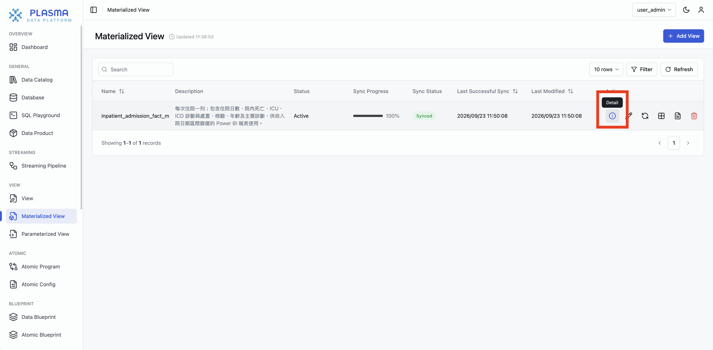
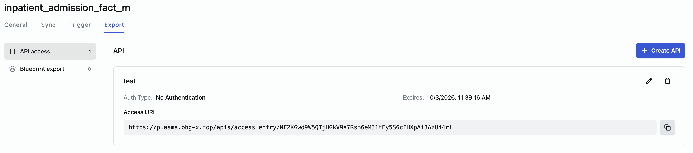
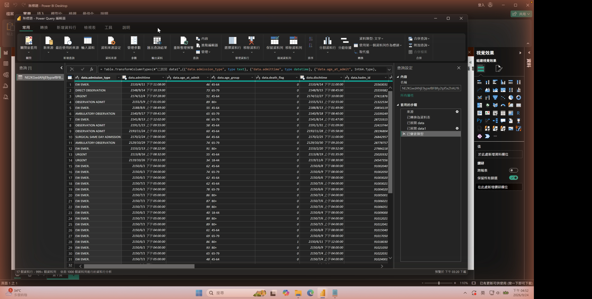
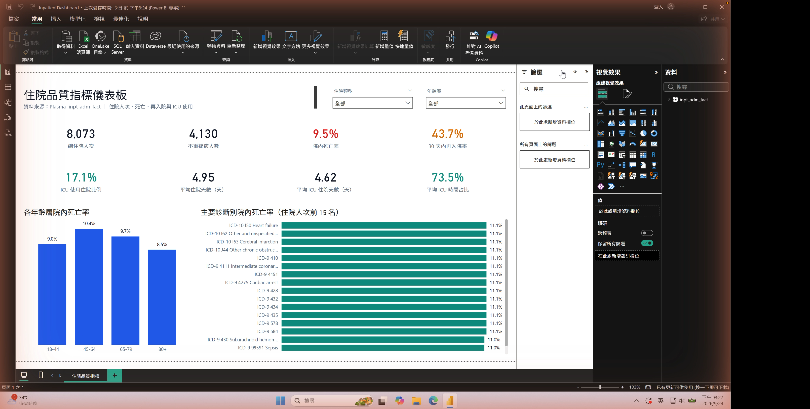

BROBRIDGE · Plasma × Power BI
Plasma
讓分散的資料，變成可交付的資料產品
資料聯邦 × 物化 × 交付 一站式資料平台
這是一份完整認識 Plasma 的簡報，最後用一個真實案例證明它跑得通。
AGENDA
今天的三個部分
PART 1
認識 Plasma
它是什麼、解決什麼、五大核心能力
PART 2
實證案例
用 Plasma 一天串起一張醫療住院 BI
PART 3
換成你的資料
同一條管線，換來源、換指標照樣跑
先建立對 Plasma 的完整認知，再用案例驗證，最後談怎麼複製。
開場
為什麼現在要談「資料交付」
- 資料越來越分散：每個系統、每個部門、每個客戶都有自己的庫
- 商業要的是可用的資料產品（報表、API、指標），不是一堆原始資料庫
- 中間那段「把分散資料變成可用產品」的工，正是最貴、最慢的一段
- 這正是 Plasma 要收斂的問題
分散資料
多個異質庫
→
? ? ?
最貴最慢的一段
→
可用資料產品
報表 / API / 指標
真正的瓶頸不在分析，而在「把分散資料變成可交付產品」這段。
PART 1
認識 Plasma
它是什麼、解決什麼、五大核心能力
PART 1 · 認識 Plasma
資料團隊每天在對抗什麼
- 資料天生分散在多個異質資料庫（不同系統、不同技術、不同權限）
- 要產出一個跨來源的指標，往往得同時碰好幾個庫
- 每多一個資料源，整合、同步、維護成本再疊一層
- 原始資料還常因合規/安全，不能隨意複製搬移
資料分散是常態，也是資料工作一直做不快的結構性根因。
PART 1 · 認識 Plasma
傳統做法：先蓋一座倉，再談分析
建資料倉
→
設計 schema
→
寫 ETL
→
排 pipeline
→
才輪到分析
- 時間：動輒數週到數月
- 風險：原始資料要再複製落地一份（敏感資料尤其棘手）
- 維護：需求一改，pipeline 要重寫重跑，越養越重
傳統 BI 慢，不是分析難，是「前置搬運與維運」太重。
PART 1 · 認識 Plasma
Plasma 是什麼
一句話：Plasma 把分散的異質資料就地聯邦、物化、再交付成資料產品。
來源資料庫
PostgreSQL / Oracle / MySQL …
→
Plasma
交付層 · 聯邦查詢引擎
→
下游消費
BI / API / 應用
- 站在資料棧的交付層：介於來源庫與下游消費工具之間
- 不取代來源庫、不取代 BI；補的是中間最貴的整合與交付
Plasma 是資料棧的「交付層」，把分散來源變成可用資料產品。
PART 1 · 認識 Plasma
Plasma 的五大核心能力
①
跨庫聯邦查詢 多個異質庫當一個邏輯來源查，原始資料不搬
②
物化 Materialized View 把運算結果固化成表，替下游降載
③
CDC / 串流同步 來源更新持續同步，維持結果新鮮
④
資料交付 一鍵出 REST API / 參數化視圖 pview / blueprint
從「查」到「算」到「交付」到「治理」，Plasma 一站收斂。
PART 1 · 能力 ①
① 跨庫聯邦查詢 — 多個庫當一個查
- 把多個異質資料庫掛進同一個工作區，當成一個邏輯來源
- 用聯邦查詢引擎做跨庫 JOIN / 聚合，原始資料留在原地不搬
- 省掉傳統「先把資料集中到一處」的整段前置工
庫 A
庫 B
庫 C
→
Plasma 聯邦查詢
→
單一結果集
資料不搬，Plasma 負責把分散來源「當一個庫」查。
PART 1 · 能力 ②
② 物化 — 把重運算「算一次，用很多次」
- 把聯邦查詢、JOIN、衍生欄位的結果固化成一張 Materialized View
- 重運算在 Plasma 端算完，下游只讀結果，查詢很輕（對來源庫降載）
- mview 是 Plasma 交付的核心單位：一張算好的、可交付的寬表
來源庫
— 一次運算 →
mview
— 多次輕量讀取 →
下游
物化＝把最花力氣的運算固化，讓下游查詢又快又輕。
PART 1 · 能力 ③
③ CDC / 串流同步 — 資料產品會自己保鮮
- 來源資料更新後，透過同步機制讓物化結果跟著更新
- Plasma 內建 Streaming Pipeline，支援持續同步而非一次性快照
- 意義：交付出去的不是死資料，是會持續更新的資料產品
來源變更
→
CDC / 同步
→
mview 自動更新
↻
Plasma 交付的是「活的」資料產品，不是一次性匯出。
PART 1 · 能力 ④
④ 資料交付 — 一鍵把資料變成可消費的介面
REST API
access entry：把 mview 直接匯出成 API，下游貼 URL 就能接
參數化視圖
pview：對外提供可帶參數篩選的視圖
Blueprint
把資料產品輸出到外部目標
從「一張算好的表」到「可被工具消費的介面」，一鍵完成。
PART 1 · 能力 ⑤
⑤ 治理與安全 — 交付得出去，也管得住
- 資料不落地：不需複製整座來源庫，降低外洩面
- 存取控管：workspace 權限、API 驗證方式（可 No Auth 或帶驗證）與效期
- 血緣可追：資料從來源到交付的路徑清楚
Plasma 讓資料「流得動」的同時，也「管得住」。
PART 1 · 收束
Plasma 為誰、解決了什麼
對資料團隊
省掉建倉與寫 pipeline 的前置重工
對來源系統
物化降載，不被下游反覆重壓
對業務 / 下游
拿到可持續更新的資料產品（API / 視圖）
對合規
資料不落地、可控管
Plasma 把「分散資料 → 可交付資料產品」這段變短、變輕、變可控。
PART 2 · 實證案例
一天串起一張醫療住院 BI
MIMIC-IV × Plasma × Power BI（2026-09-24 實作）
PART 2 · 實證
實證案例 — 情境介紹
- 資料：MIMIC-IV 開放醫療資料集，刻意拆成 4 個獨立 PostgreSQL（模擬客戶資料分散）
- 急診
mimiciv_ed、住院 mimiciv_hosp、加護 mimiciv_icu、病歷 mimiciv_note
- 目標：產出一張含 10 個住院關鍵指標、可互動的 Power BI 儀表板
- 約束：不建資料倉、不寫 ETL pipeline，用 Plasma 直接走
拿一個「資料天生分散」的真實資料集，正面示範 Plasma 怎麼收。
PART 2 · 實證
四步，從分散資料到 BI 儀表板
① 跨庫聯邦
4× PostgreSQL
→
② 物化
住院事實表
→
③ 交付
一鍵 REST API
→
④ 消費
Power BI 貼 URL
四步，沒有一步需要客戶交出整座資料庫。
PART 2 · Step 1
Step 1 — 跨庫聯邦，四個庫當一個查
- 4 個 PostgreSQL（ed / hosp / icu / note）在 Plasma 裡當成一個邏輯來源
- 用聯邦查詢引擎跨庫 JOIN（住院 × 加護 × 診斷）
資料留在原地，Plasma 把它們「當一個庫」查。
PART 2 · Step 2
Step 2 — 把指標「就地算完」物化成一張表
- mview：
inpatient_admission_fact_m_v2
- 粒度：每次住院一列（key=hadm_id），物化 8,073 列
- mview 端算好衍生欄位：age_band、days_to_next_admit、readmit_eligible、readmit_30d
- BI 端拿到「乾淨的一張寬表」，不用再拼 SQL

Plasma mview — Active · Sync 100% Synced
重運算在 Plasma 算完，BI 端只做視覺化。
PART 2 · Step 2
為什麼是「每次住院一列」
- 粒度 hadm_id（一次住院）＝ 多數住院指標的自然分析單位
- readmit_eligible / readmit_30d：把「30天再入院率」的分子分母先算好
- age_band：年齡分層，讓死亡率能直接按年齡層切
- days_to_next_admit：跨住院的時間計算在物化時處理掉
把指標語意「編進事實表」，下游想切什麼維度都很快。
PART 2 · Step 3
Step 3 — 一鍵把資料表變成 API
- 從 mview 直接匯出成 REST API（示範用公開資料，未設驗證；正式環境可設定驗證與效期）
- 回傳 application/json，
{"data":[…每次住院一列…]}，共 8,073 筆
- 不需另外寫後端、不需架 API server

Plasma Export → API access：No Auth + Access URL
從資料到可被工具消費，中間沒有工程隊。
PART 2 · Step 4
Step 4 — Power BI 貼個 URL 就進來
- 取得資料 → Web → 貼 API URL
- Power Query：把回傳的 data 展開成表格
- 改型別（API 把小數當文字回傳）：bed_days / icu_days / days_to_next_admit → 十進位；日期欄 → 日期
- 用 admission_date 建日期切片器，10 指標隨日期區間互動

Power BI 載入 inp_adm_fact 資料表
不用 connector、不用中介，貼 URL 就接上。
PART 2 · 指標
一次算齊 10 個住院關鍵指標
量能類
總住院次數 · 不重複病人數 · 平均住院天數 · ICU使用比例 · 平均ICU住院天數
品質 / 風險類
30天再入院率 · 院內死亡率 · 平均ICU時間占比
維度切分類
主要診斷別院內死亡率 · 各年齡層死亡率
這些都是醫院真正在看的營運與品質指標，不是湊數的圖表。
PART 2 · 指標
指標怎麼算的（量能類）
總住院次數 = COUNTROWS(inpatient)
不重複病人數 = DISTINCTCOUNT(inpatient[subject_id])
平均住院天數 = AVERAGE(inpatient[bed_days])
ICU使用住院比例 = DIVIDE(SUM(inpatient[icu_used]), COUNTROWS(inpatient))
平均ICU住院天數 = DIVIDE(SUM(inpatient[icu_days]), SUM(inpatient[icu_stay_count]))
因為 mview 把欄位備好了，這些 measure 都是一兩行。
PART 2 · 指標
指標怎麼算的（品質 / 風險類）
30天再入院率 = DIVIDE(SUM(inpatient[readmit_30d]), SUM(inpatient[readmit_eligible]))
院內死亡率 = AVERAGE(inpatient[in_hospital_death])
平均ICU時間占比 = AVERAGEX(
FILTER(inpatient, inpatient[icu_used]=1),
DIVIDE(inpatient[icu_days], inpatient[bed_days]))
品質指標的分子分母在 mview 先備好，DAX 只做最後一步。
PART 2 · 設計巧思
一條死亡率，切出三張不同的圖
總體
列軸：無
按主診斷
列軸：primary_diagnosis_name
按年齡層
列軸：age_band
指標 5 / 8 / 10 其實是同一條： AVERAGE(inpatient[in_hospital_death])
measure 寫一次，維度靠視覺化切——這就是維度建模的力量。
PART 2 · 運行
資料會更新，儀表板跟著更新
資料更新
→
mview Sync
重新物化
→
Power BI 重新整理
- 兩步，沒有重建 pipeline
- 可排程 sync，運維成本極低
這不是一次性 demo，是可持續運行的資料產品。
PART 2 · 成果
成果 — 一張活的住院分析儀表板

Power BI「住院品質指標儀表板」— 資料來源 Plasma inp_adm_fact
PART 1 講的能力，在這張儀表板上全部兌現了。
PART 3
換成你的資料
可複製的交付流程 · 下一步
PART 3 · 收斂
MIMIC 只是範例，管線才是產品
聯邦
→
物化
→
出 API
→
BI 消費
↑ 換來源、換指標、換事實表；這條管線不變
換成你的資料來源與指標，同一條管線照樣跑。
PART 3 · 下一步
用你的資料，跑一次給你看
- PoC 一至兩週：接上你的資料庫，做出第一張儀表板
- 原始資料留在原地，不必先蓋資料倉
- 聯絡 Brobridge 寬橋：contact@brobridge.com · +886 2 8729 9611
附錄
附錄 — 技術規格速查
| 資料源 | 4× PostgreSQL（ed / hosp / icu / note），Plasma 跨庫聯邦 |
| mview | inpatient_admission_fact_m_v2，粒度 hadm_id，8,073 列 |
| 衍生欄位 | age_band / days_to_next_admit / readmit_eligible / readmit_30d |
| 交付 | mview → REST API，JSON，8,073 筆 |
| 消費 | Power BI Web connector；型別修正（小數→十進位、日期欄→日期） |
| 更新 | mview Sync → Power BI Refresh |
一頁看完整套規格。